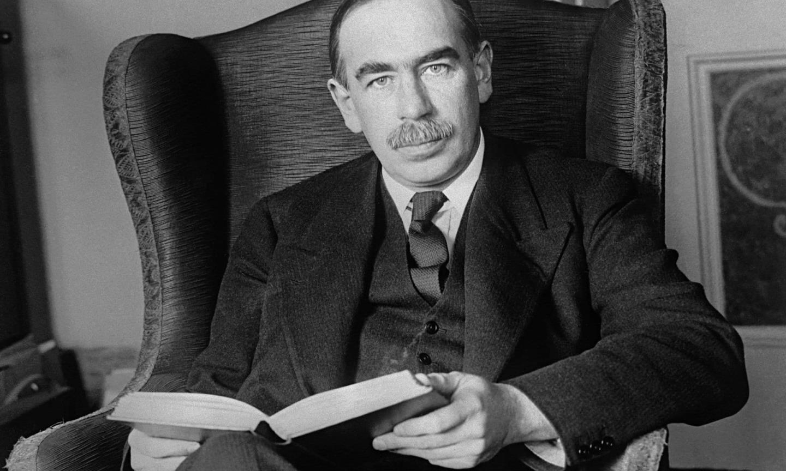

L'Economia prima di Keynes
Prima della crisi del 1929 dominava la teoria classica, che si basava sulla Legge di Say ("l'offerta crea la propria domanda"). Secondo i classici il sistema si riequilibrava da solo garantendo sempre la piena occupazione. Il ruolo dello Stato doveva essere minimo (laissez-faire) e concentrarsi solo su difesa, giustizia e opere pubbliche essenziali.
La Rivoluzione Keynesiana
John Maynard Keynes ribaltò questa visione con la Teoria generale dell'occupazione, dell'interesse e della moneta (1936). Egli affermò che:
- La domanda crea l'offerta: le imprese producono solo ciò che pensano di vendere (principio della domanda effettiva).
- Equilibrio con disoccupazione: il mercato può bloccarsi in una situazione in cui la domanda è troppo bassa per garantire lavoro a tutti.
- Preferenza per la liquidità: le persone possono decidere di tesaurizzare la moneta (tenerla ferma) per precauzione o speculazione, riducendo consumi e investimenti.
Keynes dimostrò che, specialmente in tempo di crisi, il settore privato da solo non è in grado di ripartire perché le famiglie consumano meno e le imprese non investono se le prospettive sono negative.
L'intervento dello Stato (Deficit Spending)
La soluzione di Keynes fu rivoluzionaria: lo Stato deve intervenire attivamente nell'economia per sostenere la domanda. Questo intervento prende il nome di politica fiscale espansiva.
Lo Stato deve:
- Aumentare la spesa pubblica (es. grandi opere infrastrutturali)
- Accettare di andare in deficit (deficit spending), cioè spendere più di quanto incassa con le tasse
- Sostenere il reddito delle fasce più povere, che hanno una propensione marginale al consumo più alta (spendono subito quello che ricevono).
L'aumento della spesa pubblica attiva il moltiplicatore keynesiano: i soldi spesi dallo Stato diventano reddito per lavoratori e imprese, che a loro volta li spenderanno per altri consumi, generando un effetto a catena che fa crescere il reddito nazionale di un importo multiplo rispetto alla spesa iniziale. In questo modo l'economia riparte e la disoccupazione si riduce.